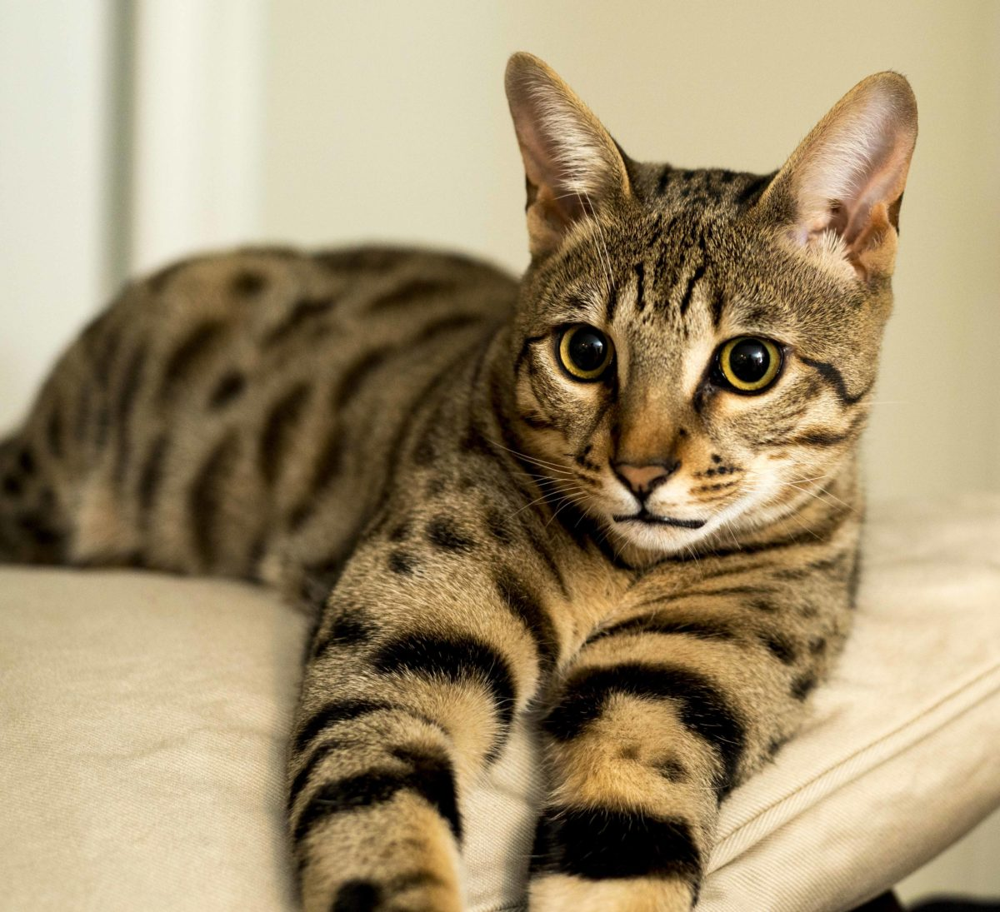

Savannah
El gato Savannah es una hermosa raza de gato exótico. Con un temperamento de gato doméstico y un aspecto salvaje, heredado de su ancestro el serval africano (felino salvaje).
Savannah
Un Savannah descanzando. La raza de gatos Savannah, surge en 1986 a raíz de un cruce entre un serval africano y un gato doméstico,
------------------Datos sobre los Savannah------------------ Caracter  Los gatos Savannah tienen una personalidad increíble.
Aspecto El gato Savannah tiene unas características físicas muy particulares que lo hacen verse similar a un leopardo.
Sin embargo, debido a ser un gato doméstico cuyo progenitor es un felino salvaje,
AspectoAdfcercAkjde
Estos gatos han llamado la atención en las últimas décadas por su majestuoso y salvaje físico.
Es por esto que queremos contarte a lo largo de este artículo todo acerca los gatos Savannah, su origen, características, datos de salud y sus cuidados.
pero fue solo hasta el 2012 que la raza fue reconocida oficialmente por la TICA (The International Cat Association).
Los gatos domésticos utilizados en el cruce fueron razas de gatos de pelo corto y la motivación que tuvieron los criaderos para seguir procreando esta raza,
fue el poder tener un gato doméstico que tuviera la apariencia de un <>elegante gato leopardo en casa.
Gracias a que tienen la agilidad y la independencia de un animal felino salvaje combinado con la ternura y lealtad de un gato doméstico.
Son gatos extrovertidos, divertidos y muy inteligentes. Suelen aprender rápido y son bastante curiosos, pues aman explorar todos los espacios.
Son gatos con un nivel de actividad medio y alto, ya que les encanta jugar, correr y saltar.
Incluso pueden llegar a saltar hasta 2 metros de distancia, gracias a sus patas largas y flexibles y a su cuerpo atlético.
Con un gato Savannah en tu casa puedes divertirte en todos los espacios, como en el agua.
Ya que es muy diferente a la mayoría de los felinos, pues el ama el agua y le encantara nadar y chapotear en los charcos.
Es un gato de tamaño grande, con cuerpo delgado y estilizado.
Tiene patas largas, cabeza triangular con orejas bastante grandes y puntiagudas.
Pueden pesar de 10 a 12 kilogramos y tienen una expectativa de vida de 12 a 20 años.
Los Savannah tienen ojos grandes y expresivos que van acompañados de un lagrimal negro
y aunque el color del pelaje mas común y popular es el atigrado manchado café.
su carácter también depende del nivel de parentesco que tenga con el Serval Africano.
Es decir, los gatos Savannah están clasificados en F1, F2, F3, F4 y F5
Volver a pagina principal